Vérifier les couvertures
Les 29 couvertures ramenées automatiquement le 28/08, récupérées de l'historique du dépôt.
Sur les 29, 16 étaient justes et 13 fausses — mais on n'a jamais noté lesquelles.
Dis-moi pour chacune si l'image est bien celle du livre. Je ne remets en ligne que celles
que tu auras validées. Les quatre en rouge sont déjà connues comme fausses.

Crâne
Patrick Declerck · Gallimard

Dans les coulisses du social
· érès
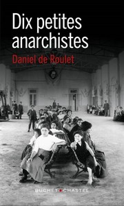
Dix petites anarchistes
Daniel de Roulet · Buchet/Chastel
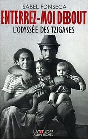
Enterrez-moi debout — L’odyssée des Tziganes
Isabel Fonseca · Albin Michel

Essai sur le don
Marcel Mauss · PUF, coll. Quadrige
déjà repérée fausse le 28/08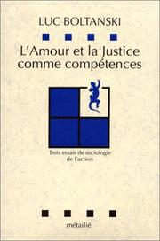
L’Amour et la Justice comme compétences
Luc Boltanski · Folio essais
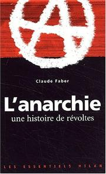
L’anarchie — une histoire de révoltes
Claude Faber · Les Essentiels Milan

L’art de la guérilla sociale
·
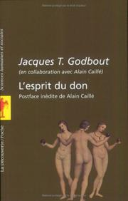
L’esprit du don
· postface d’Alain Caillé
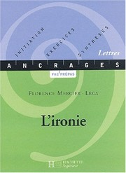
L’ironie
Florence Mercier-Leca · Hachette, coll. Ancrages
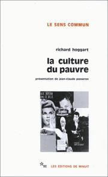
La culture du pauvre
Richard Hoggart · Les Éditions de Minuit
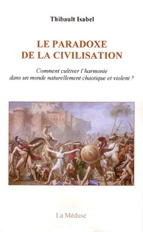
La discipline est-elle à l’ordre du jour ?
Félix Gentili, Jean-Paul Petinarakis, Dominique Sénore · CRDP de Lyon, coll. Champ de réflexion, champ d’actions, 1997

La drogue — écrits sur la toxicomanie
Claude Olievenstein · Gallimard

La faim dans le monde expliquée à mon fils
Jean Ziegler · Seuil

La peste religieuse
Johann Most ·
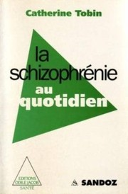
La schizophrénie au quotidien
Catherine Tobin · Odile Jacob

Le banquier anarchiste
Fernando Pessoa · Titres
déjà repérée fausse le 28/08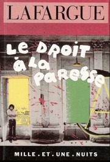
Le droit à la paresse
Paul Lafargue · Mille et une nuits

Le travail sans qualités — les conséquences humaines de la flexibilité
Richard Sennett ·
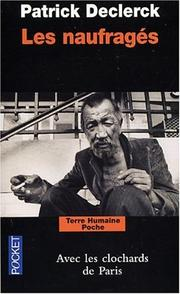
Les naufragés — Avec les clochards de Paris
Patrick Declerck · Plon, coll. Terre Humaine
déjà repérée fausse le 28/08
Les névroses — L’homme et ses conflits
· Découvertes de la psychanalyse

Les pauvres
Georg Simmel · PUF, coll. Quadrige
déjà repérée fausse le 28/08
Maladie mentale et psychologie
Michel Foucault · PUF

Manifeste du Parti communiste
Karl Marx et Friedrich Engels · 1848 — édition Mille et une nuits

Matière à réflexion — Pourquoi nous ne savons plus vivre
Alan Watts · Médiations
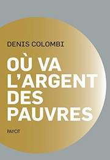
Où va l’argent des pauvres
Denis Colombi ·

Psychologie — court traité de philosophie
· Fernand Nathan

Si tu m’aimes, ne m’aime pas
Mony Elkaïm ·
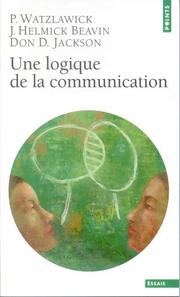
Une logique de la communication
P. Watzlawick, J. Helmick Beavin, D. D. Jackson · Points